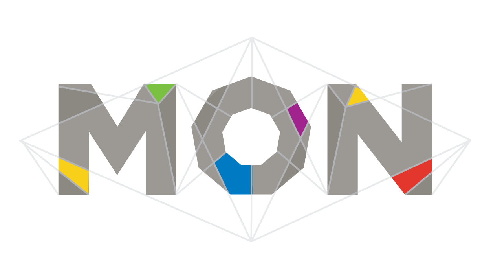
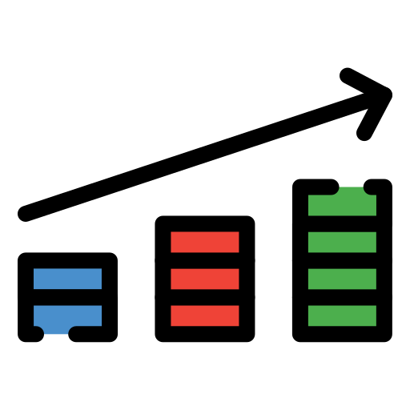

Rol: Product Manager / Game Designer / Sound
Tiempo de desarrollo: 4-5 meses
Equipo: 3 personas
Motor: Unity
Plataforma: PC (Windows)
MON es un juego RPG de combate por turnos en 3D con una estética minimalista inspirada en el origami, donde el personaje evoluciona visualmente a medida que recupera su color.
Cada mejora se refleja directamente en su cuerpo de papel: distintas partes del personaje se colorean según la estadística que se potencia, integrando la progresión con la identidad visual del juego y reforzando el vínculo entre mecánicas y narrativa.
El juego se basa en un sistema de combate táctico por turnos con cinco estadísticas principales, cada una representada por un color: vida (azul), poder (rojo), velocidad (verde), energía (amarillo) y resistencia (violeta).
El jugador debe tomar decisiones estratégicas simples de entender pero difíciles de dominar, gestionando recursos y eligiendo entre distintas opciones de progresión entre niveles.
Estas decisiones incluyen mejoras de habilidades y el uso de una tienda dinámica, permitiendo adaptar el estilo de juego en cada partida según las elecciones realizadas.

Color como progresiónEl color no solo cumple un rol estético, sino también mecánico y narrativo. Representa el progreso del jugador y permite identificar rápidamente habilidades tanto propias como de los enemigos.
Se diseñó un sistema de decisiones simples de entender pero con profundidad estratégica, permitiendo que el jugador aprenda rápido pero mejore con la experiencia.
La energía limita la cantidad de acciones por turno, obligando al jugador a priorizar y planificar cada movimiento.